Hi! I'm Jacob Lynn and I am a sophomore (Class of 2029) studying mechanical engineering with a minor in comp sci at Stanford University. I also do research in the Stanford ARMLab where I work on electromagnetic robotic muscles for tendon-driven robot hands! I'm interested in robotics and space and I've always loved to create. My dream job would someday be to work on space robotics :). This website is meant to serve as a portfolio of what I have made in college so far! I hope you look around, and please reach out to me if you have any questions or thoughts: jnlynn@stanford.edu
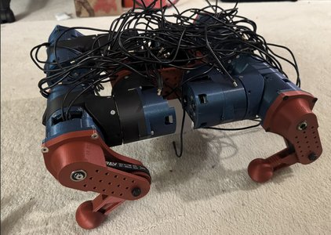
Limbed Robot Project A generic, modular framework for building limbed robots, and a 12-DoF robot dog built with it.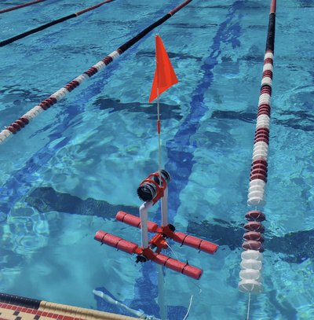
Europa – Benthic Lander A low-cost, open source deep-ocean research lander with SSI. I lead the mechanical design.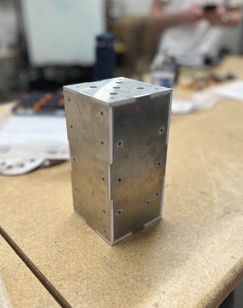
IREC – Payload Mechanical redesign of a rocket payload for growing crystals in microgravity.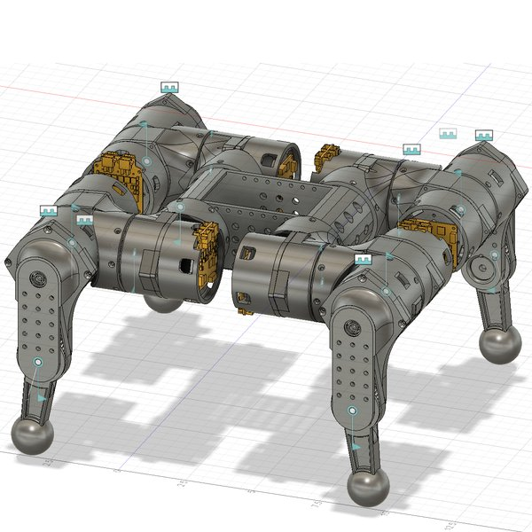
The large overarching goal of this project is to make a generic framework for making limbed robots. All limbed robots can be described from one link to another with 4 numbers (D-H Coordinates). I wanted to make a more physical interpretation of this. Another big element of limbed robots is the torque/speed of each joint. This is determined by the gear ratio and the motor. To make the project simple, I assumed there was only one motor. Therefore, this project is:
I am trying to make a generic model of a robot link where both gearboxes and the physical link to link distance is very modifiable and easy to change. I am using a single motor and have designed a set of gearboxes (3:1, 9:1, ..) and am currently designing a system to make them easily swappable. In terms of the distance from link to link I have designed a simple input/output mechanism that is easy to screw in, so from the output of one motor the next link can be at whatever angle and placement.
Using this system, I have designed and built a full-sized robot dog. I have also designed (but not yet built) a series of other classic limbed robots, including multiple 7DoF robot arms, a copy of the JPL RoboSimian, hexapods, and more robot dogs.
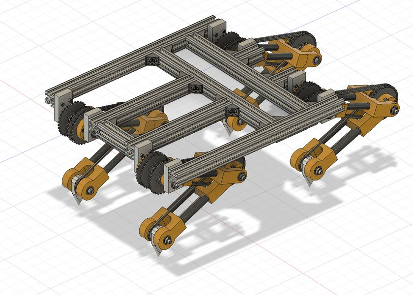
I've spent almost a year on this project so far (and there is still lots to go!). The project started out as an attempt to build a walking and climbing robot (with little spikes I designed). I wanted to make a sort of "crab robot", that walked sideways and could also climb trees/porous objects like a crab did. I got as far as making a full CAD model of the crab (pictured to the right). However, the CAD had many issues, with the main ones I could foresee was the spiked foot being backdrivable and general problems with chain tension. I decided I should CAD another model before moving onto prototyping.
It was because of designing that version that I realized that a lot of the mechanical design behind robotics can be generalized. I only wanted to add a simple hook mechanism at the bottom of an already existing robot dog design. I then started to work on a generalized robot dog. At that point in time, I only was trying to make a system that people can edit the length of and have a dog of varying lengths. It was then that I designed the next version of the robot dog. I started to physically prototype too, 3D printing all of my versions and testing them. The major design changes from this version was moving to a belt driven mechanism and also have a not-backdrivable worm gear for the climbing mechanism.
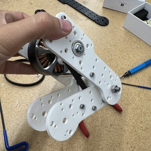
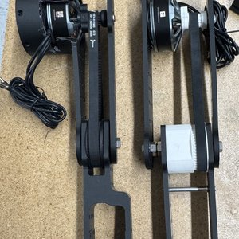
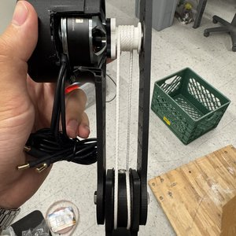
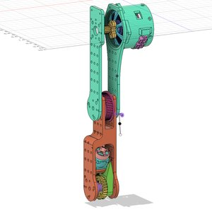
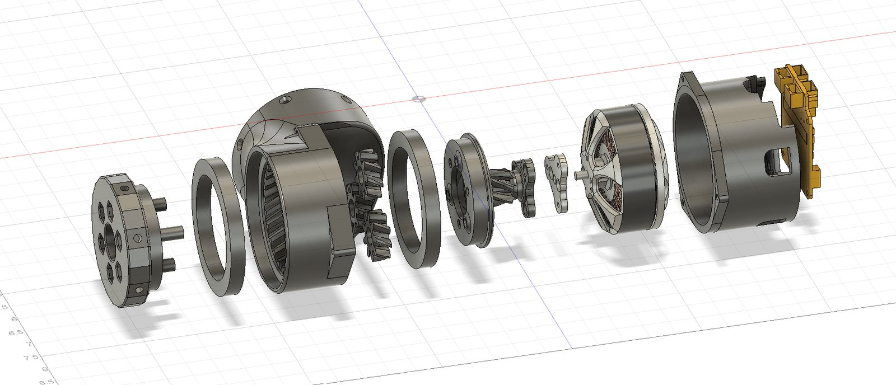
I realized I needed a QDD (quasi-direct drive) actuator because of the gear ratios that I needed. Because I was using drone motors, I had a very low torque and a very high rpm (which is the opposite of what I needed for a robot dog). I could only get a max of 3:1 ratio with a belt drive, while I could easily get a 5:1 or 9:1 ratio with a planetary gearbox. When I designed and tested the planetary gearbox, it worked very well, and I switched to the final project that I am working on now (generic limb robot). After a couple iterations of design I landed on a 5:1 gear ratio planetary gearbox with helical gears. There is relatively low friction and almost no backlash. This actuator became the core of all further designs. It produces around 4Nm of torque at ~740 rpm (still very fast and relatively weak). The motor powering the current actuator is a tmotor MN5212, which produces around .75nM of torque at a stable operating state. It runs on 6S voltage (22.4v)
The actuator is the main place of improvement of my design. Because I was limited by 3D printed gears I was limited to what module I could print the gears, and therefore the ratio I could get. I am planning on trying to reduce the module as much as I can go (I have done a 9:1 ratio already which has worked), and also look into different types of gearboxes (cycloidal, harmonic, etc).
I have fully built and mechanically tested a simple version of the robot dog so far. It stands at about 6in off the ground and weighs around 13 pounds. It runs off a 10000mAh 6S battery, where it can comfortably walk and jump for around 20 minutes. It has 12DoF in the same directions as many of the standard industry robot dogs that exist. Its hip and upper leg joints are powered by 2 5:1 ratio QDD actuators and the lower leg joint is powered by a belt at a 3:1 ratio. It took many iterations and 3D prints to get to the current state. It is mostly 3D printed, for reproducibility and cost.
The dog is powered by a teensy 4.1 microcontroller that runs a micro-ros node which communicates with the computer. Each individual motor is powered by a moteus r4.11 motor controller. These also serve as the encoders for the motor, and are all connected together with a FD-CAN protocol. These controllers are powered directly by a 10,000mAh 6S battery which feeds into two PDBs which split the current into all of the 12 controllers.
I am currently still working on the software, but it will be run with a ROS2 environment. Each motor controller will be a node which will then feed into a node for each leg (hip + upper_joint + lower_joint). Each leg node will calculate the position of the tip of the leg using the jacobian and will account for any errors with basic PID control. Some basic trotting/crawling/walking behaviors will then be designed.
Using the generic QDD actuator, I designed many more limbed robots to demonstrate the projects potential. While many of the gearboxes need to be designed, I was able to design almost any type of limbed robot, from various models of robot arms to more obscure old robots (JPL's robosimian). Each of the different CADs shown need various gear ratios, from the 5-Bar robot dog only needed the current 5:1 to the robot arms which need upwards of 50:1 ratios in them.
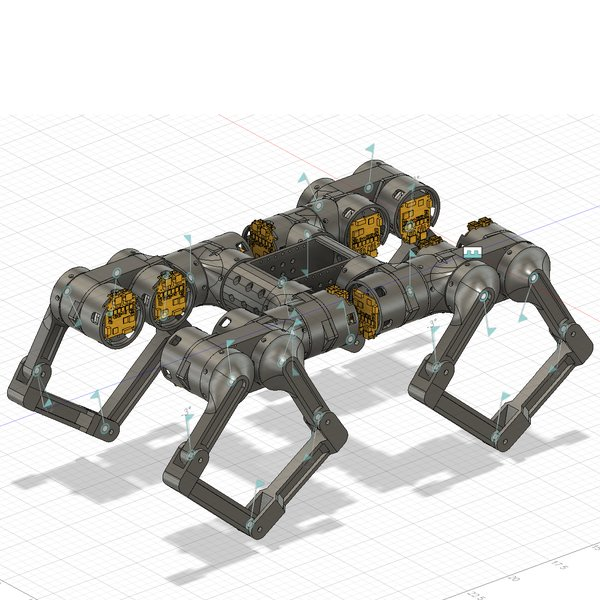
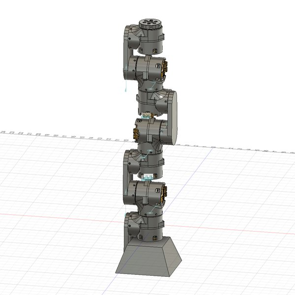
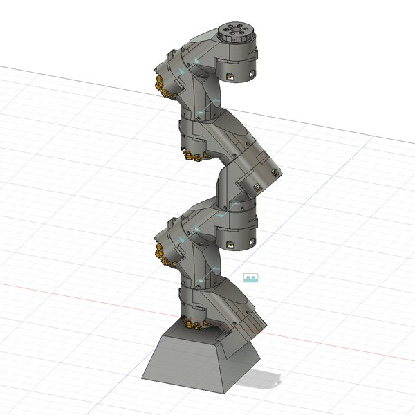
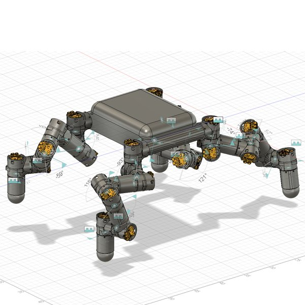
Interactive 3D CAD models of the robot dog and each of these robots can be viewed at jacobnlynn.github.io.
There is a lot of work to do in the future. The first thing I need to do is design more gearboxes along the same form factor. Then I hope to make the gearbox systems easily swappable. I also hope to improve the link between joints to be more diverse or more easily snapped on (versus screwed on). I will try to occasionally update this page according to my current progress, but my hope is that someday this can be an open source project! I hope this can help people build more types of robots easier, and not make them have to rediscover the same stuff. I hope these robots and this framework can act as a jumping off point for other people to build more creative and more diverse robots :)
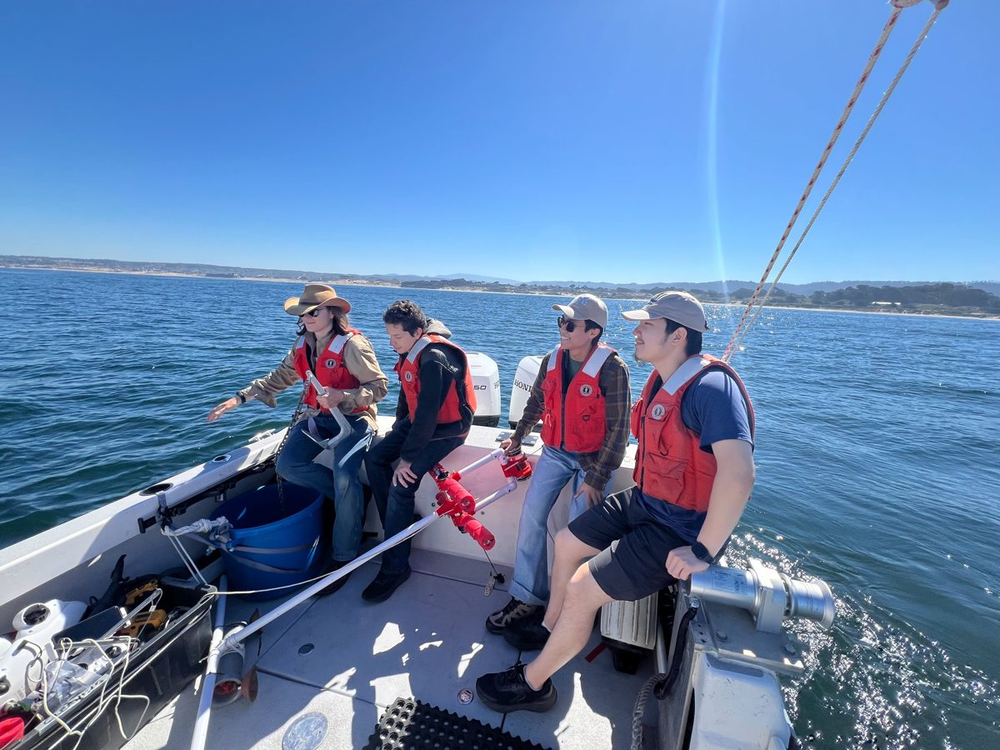
I co-lead the Europa subsection of SSI (Stanford Student Space Institute)! We are designing a low-cost (<$5k) open source benthic lander for ocean trench level depths to be used as a research platform for scientists. Benthic Landers are scientific research platforms dropped to the bottom of the ocean, where they sit for a couple hours then drop a weight and float back up. Deep sea benthic landers often cost upwards of $300,000, a problem we are trying to fix. Our goal is to make a generalized research platform for deep ocean research that any scientist can easily make for a reasonable price.
There are a couple main parts to the project, the mechanical structure and equipment, the electronics, the biology/scientific aspect, and the computer science. I lead the mechanical design of the lander! The mechanical design has a couple parts: the structure, timed-releases, and various sampling equipment.
The structure is the part most affected by pressure. The most important part of this design is to make a strong, rigid structure while also keeping the buoyancy such that it always stays upright. Because of this, we design long forms with our glass/acrylic tube that can withstand pressure on top. We have multiple of these, one of which that holds the electronics and another higher structure that sends out a radio/gps signal when at the top. It is the job of the structure to make sure the radio/gps tube is floating high above the water and will not tip in the waves.
The timed-releases are in charge of releasing the weights and many of the water/soil/dna captures. They are galvanic-timed releases, which means they are made with a link of metal that corrodes in sea water for a consistent amount of time (ex: 2 hours). The mechanical team is in charge of pre-soaking many of the releases so that they trigger at certain times, so the timeline of events looks like:
Dropped in water → sinks to bottom → water/DNA/soil captures trigger → weight releases and lander floats back to the top
The most mechanically complex part of the benthic lander are the various soil/DNA/water capture mechanisms. Because of the extreme pressures, we cannot use any electronics when designing these. Therefore, they are all timed-release or spring-driven. The most developed was the soil claw, which I made multiple prototypes of both spring-driven and timed-release versions. We also made two versions of a timed-release water capture tube and are currently working on a pressure-driven DNA capture device.
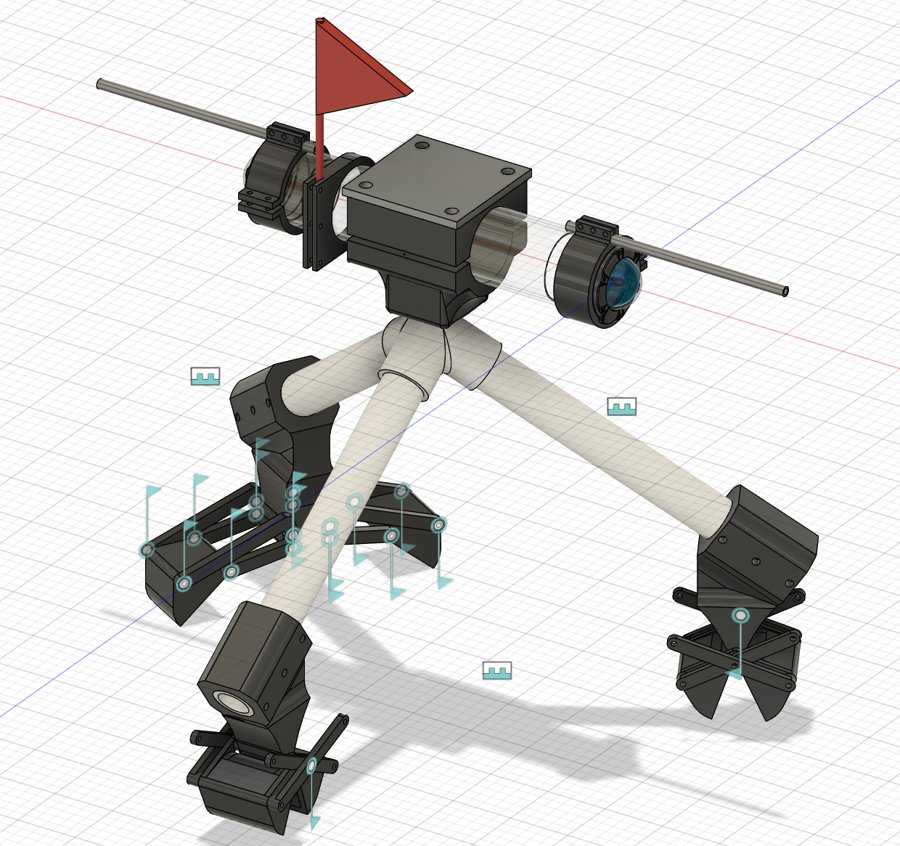
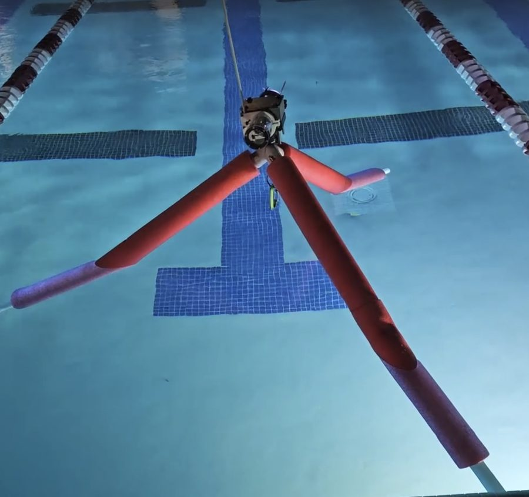
We spent the past year (first year of the club) making a proof of concept benthic lander to make sure we have all of the mechanisms and concepts working. We used a small, clear acrylic tube that was rated for 1000m. We also used pvc pipes for the structure (instead of aluminum which we will eventually use in the deep sea version).
We learned many things from our weekly early tests in the Stanford pool. The biggest was issues with buoyancy and stability of the whole lander. We had positioned the main center of buoyancy underneath the center of weight, which made the lander tip easily (messing up the gps). However, we learned many things and also got the galvanic timed-releases working consistently!
Another place where we learned a lot was the material we made the structures out of. We found out that we can easily prototype with 3D printed parts as long as they are printed with a low infill and holes are drilled in them (allowing water to flood the part).
The part we changed the most was the structure underneath. We had many variations, from legs to an H configuration to long tubes downwards. The structure underneath determined a lot about the buoyancy. The weight needed to be placed underneath but even after the weight was dropped, the center of mass still needed to stay underneath the center of buoyancy, which required much trial and error. Another important consideration was the placement of the soil/water samplers (we didn't have DNA at the time). They needed to have enough room for them to work but must be placed underneath the center of buoyancy (because they were heavy).
The claw was one of the more complex design problems on the lander (and it was my initial role!). I initially prototyped a couple versions, including simple hinge jaws and also more complex 4-bar jaws that were designed to sweep soil off the floor more efficiently. I also played around with mechanisms that would not be spring loaded but rather pulled shut when the lander dropped the weight and started to float back up. However, with testing I found that the easiest and most reliable mechanism was a simple galvanic timed-release.
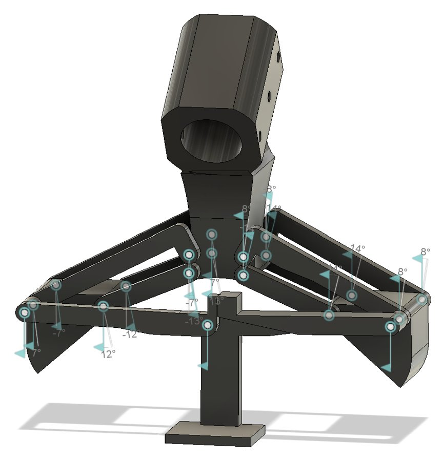
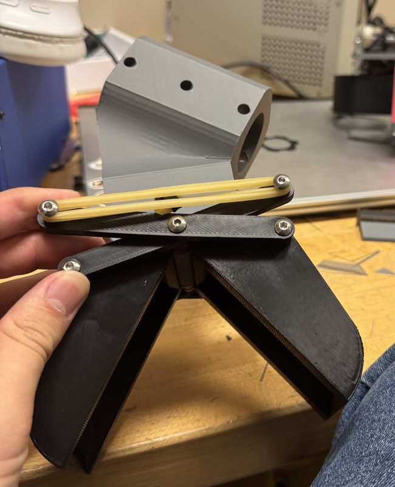
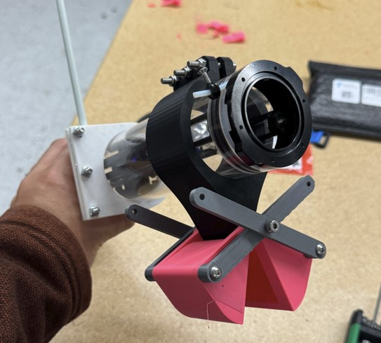
Over the period of a year we tested extensively in the pool and occasionally in the ocean. When we would test in the pool we would not test timed-releases but we would video and collect water pressure data. We designed a setup within the tube where we can measure water pressure and therefore estimate how deep we are to ~10ft. We would test more or less every weekend in the pool whatever advancement we had made that week.
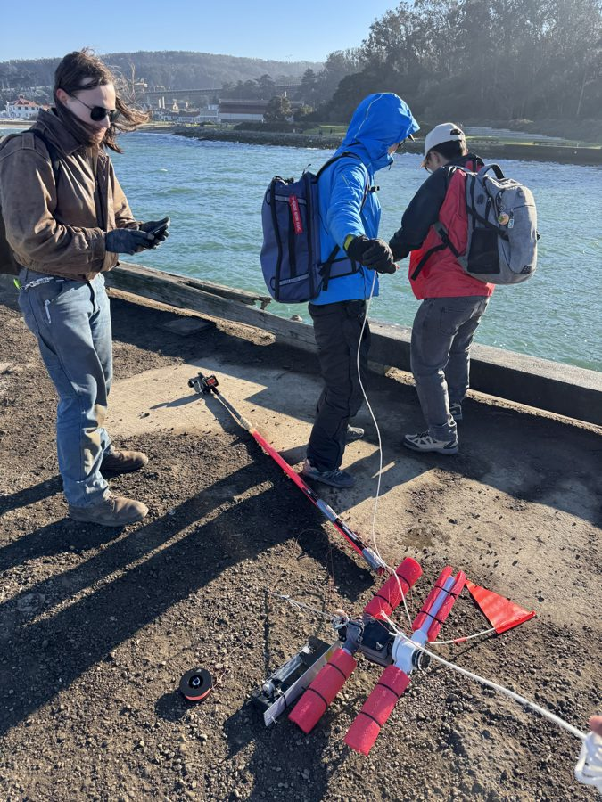
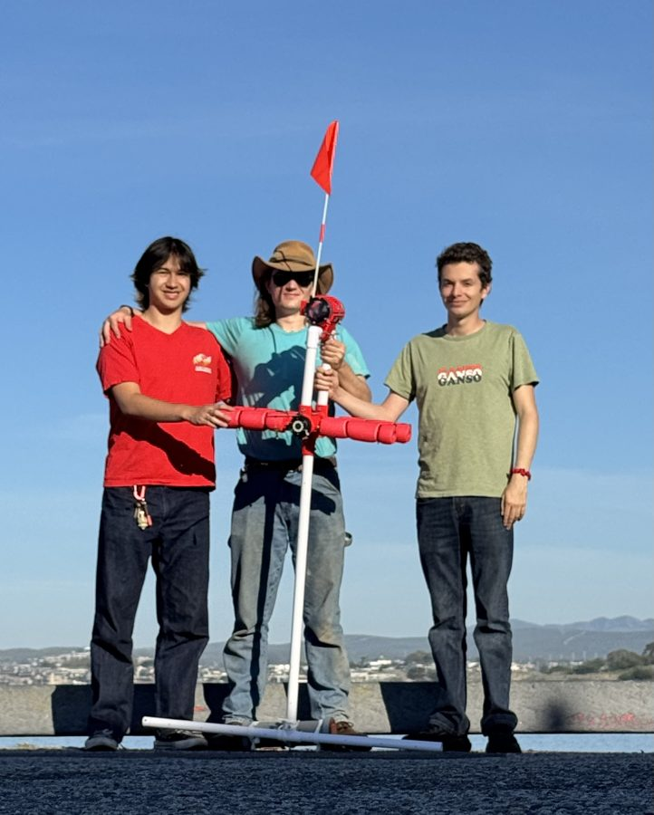
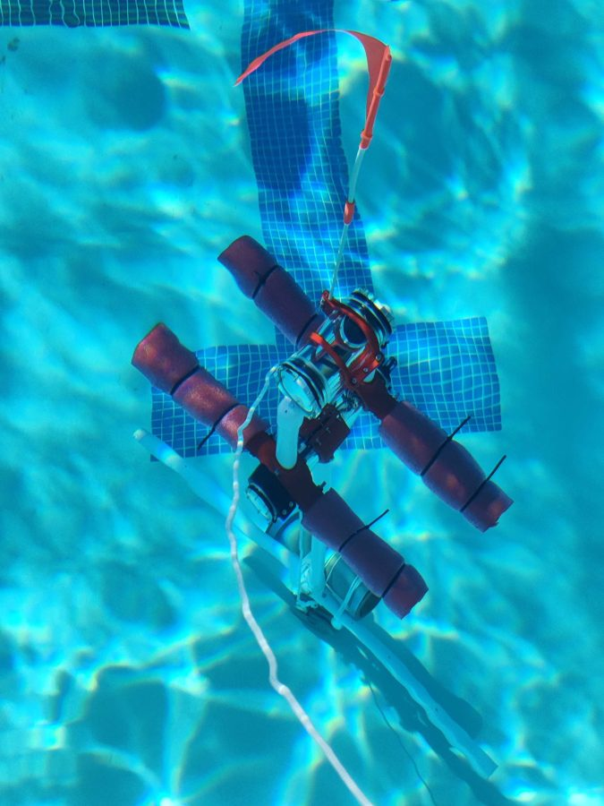
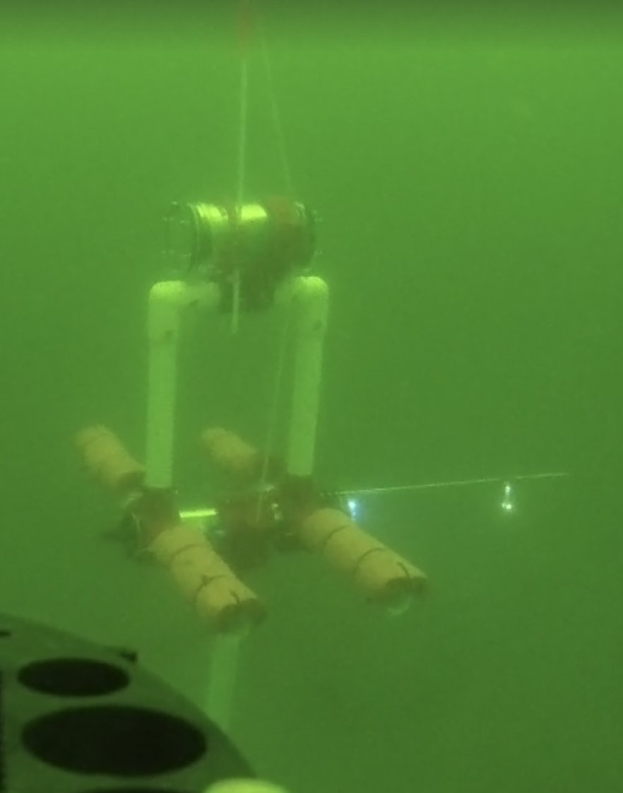
The interesting tests were the ocean tests though. There we would test all the mechanisms we could. The first test we did, we went to the SF Bay, which was a mistake. The water was very wavy, cold, and there was no visibility. We also were freezing in the high winds (we were right under the Golden Gate Bridge). However, the lander performed very well! All video function worked perfectly and the timed-releases (it was the first test of them) worked all according to plan.
The next tests were much better. We emailed MBARI (Monterey Bay Aquarium Research Institute), and they took us out on their boat to test in deeper and clearer waters. We also integrated some bait hooks right in front of our cameras to hopefully capture some fish. The first tests we simply did off a pier (which also worked very well), and then we went on the boat for those tests. The boat tests worked perfectly according to plan, we were able to collect water pressure, water temperature, video footage, and water samples. The weight release also worked as planned! Unfortunately we had a bad kind of bait and no fish wanted to be near us.
The future of the Europa team is looking very exciting. At the end of last year, we decided we had tested the proof of concept enough and we bought a sphere rated for 12,000m (deeper than the Mariana Trench). We will be developing a aluminum structure and working the electronics around the new housing. Perhaps the biggest change is redesigning all of the claws and soil/water/DNA collectors. We have many ideas how we use the changing pressures of going deep into powering DNA collectors and water samplers.
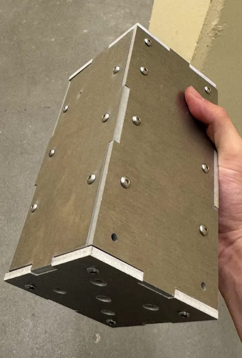
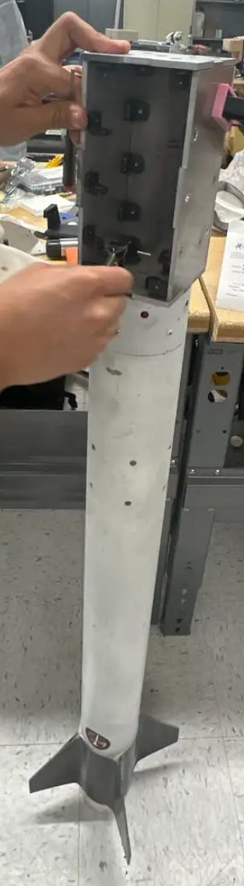
I was on part of the team that designed the payload for Stanford's IREC team (in Stanford Student Space Institute (SSI)). On one of the test flights/rocket prototypes I was in charge of the mechanical redesign of the payload. The payload was a 100mmx100mmx200mm box.
The payload was designed with all the scientific equipment to synthesize crystals in microgravity. The plan was the payload would fly into the air and the chemical reaction would start at the apogee of the flight, at which point it was ejected with the parachute for a couple more sections of microgravity. The entire process was only around ~10-20 seconds. There was a camera pointed at a petri dish inside the payload, which recorded the crystal growth. There were two separate plans to make crystals. The first was simply to inject a supersaturated liquid into a petri dish, where it would naturally start to form crystals. The second was to have two separate liquids that would mix the liquids and make crystals through the chemical reaction between them. I had to design for a payload that could do either option.
The biggest changes that I redesigned was the external structure. The previous payload was simply a 3D printed circular structure that fit within the rocket. The new version had to be part of the rocket and support it.
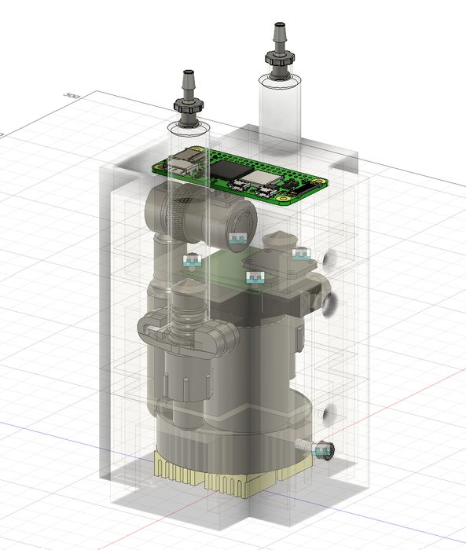
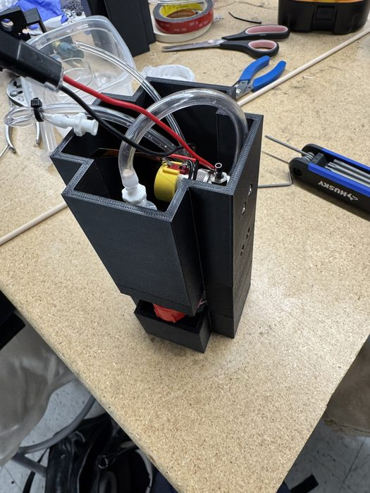
The biggest challenge with the interior design was simply fitting every part inside. The complete system was:
Two syringes → tubing → solenoid with gas canister → Petri dish
There was also a large camera right above the petri dish and a large mess of electronics boards, tubing, and wiring. I also wanted to design the entire system to be very modular. We had experienced problems in the past where, if a wire or part broke, it would be very hard to repair (needing to take apart the entire system). I designed a multi-tiered system that was also easy to slide out of the metal frame. Each tier would have some section of parts attached to it, so you could simply take that tier out and edit the parts. The whole system was 3D printed. There was also a large hole that ran through one of the sides so that any tier can access another with tubes/wires, making that hole be the main wire/tube highway. A dedicated electronics tier was also very helpful for repairs. The tiers were organized as:
Petri Dish Tier → Syringe/Camera Tier → Gas Canister/Solenoid Tier → Electronics Tier
After that first payload I actually redesigned another. This one kept the same exterior structure, but we changes how we wanted to bracket it. The new redesigned structure got rid of the tiers and replaced it with a simple two-tiered system, which ended up being super simple and robust. The 3D prints were very easy to repair and every part was easily accessible. That version was the best design of the payload, but it never flew due to the year ending
The biggest challenge of the interiors was making sure everything was very secure/vibration resistant. Because we had fragile glass petri-dishes and cameras and syringes full of chemicals, we did not want our payload to leak/be damaged. While we toyed with the idea of some sort of spring suspension, we found that if we designed everything to be extremely perfectly toleranced, then the vibrations would not break the equipment. Through 3D printed trials and multiple broken petri dishes, we found perfect tolerances for all of the interior parts. The petri dish was held in with a set screw to be able to be removed easily while also being very secure.
The exterior design was a different design challenge. The main forces and challenges facing it was that it was now part of the physical structure of the rocket (which goes mach1+). It needed to be very sturdy but also easy to take apart so we could load the chemicals safely (and at the test site). Our final version was able to integrate well with the rest of the rocket and also was very sturdy. It was made of laser cut aluminum.
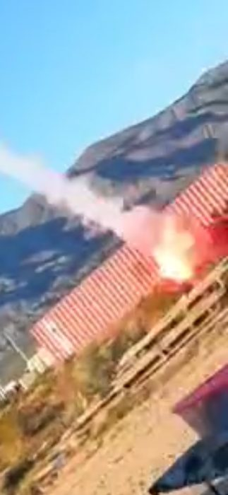
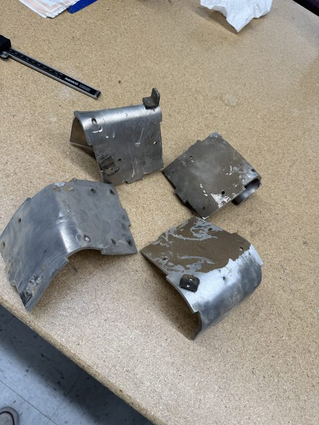
While the payload looked very beautiful and the interiors functioned well (on the ground), the rocket carrying the payload crashed (hard)(not because of the payload). The payload design did not cause the crash. The rocket ended up crashing into the ground at over Mach 1, completely decimating the interiors of the payload and completely squishing the exterior. The entire front half of the rocket disintegrated :(.
A more positive note for the payloads structure is that the payload is what stopped the rockets crash, meaning that we were able to recover (somewhat) everything behind the payload even if the payload got disintegrated.